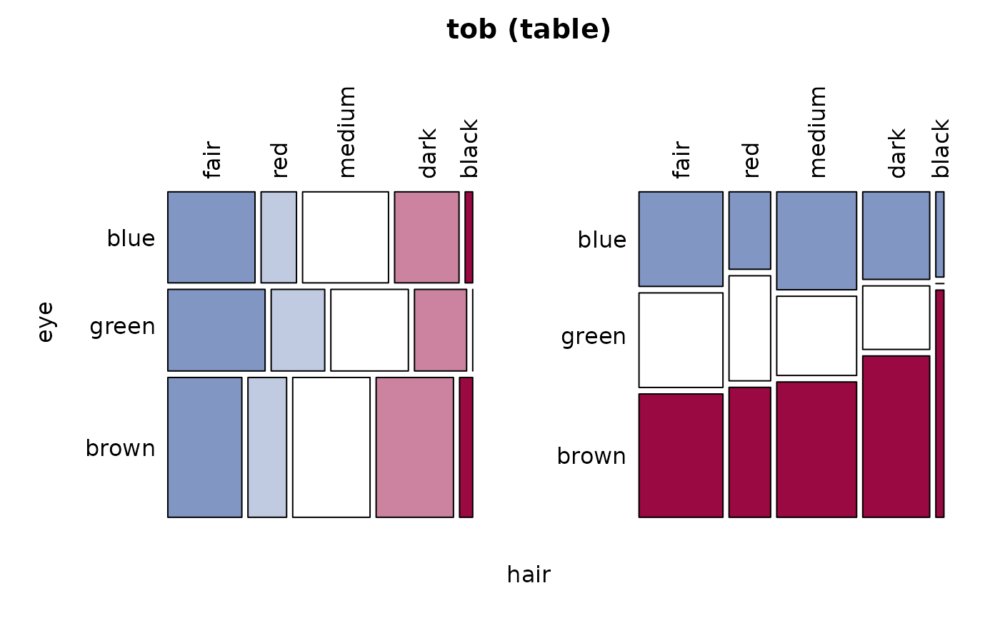

Assocs.RdCollects a number of association measures for nominal and ordinal data.
Assocs(x, conf.level = 0.95, verbose = NULL) # S3 method for Assocs print(x, digits = 4, ...)
| x | a 2 dimensional contingency table or a matrix. |
|---|---|
| conf.level | confidence level of the interval. If set to |
| verbose | integer out of |
| digits | integer which determines the number of digits used in formatting the measures of association. |
| ... | further arguments to be passed to or from methods. |
This function wraps the association measures phi, contingency coefficient, Cramer's V, Goodman Kruskal's Gamma, Kendall's Tau-b, Stuart's Tau-c, Somers' Delta, Pearson and Spearman correlation, Guttman's Lambda, Theil's Uncertainty Coefficient and the mutual information.
numeric matrix, dimension [1:17, 1:3]
the first column contains the estimate, the second the lower confidence interval, the third the upper one.
Andri Signorell <andri@signorell.net>
Phi, ContCoef, CramerV, GoodmanKruskalGamma, KendallTauB, StuartTauC,
SomersDelta, SpearmanRho, Lambda, UncertCoef, MutInf
options(scipen=8) # Example taken from: SAS/STAT(R) 9.2 User's Guide, Second Edition, The FREQ Procedure # http://support.sas.com/documentation/cdl/en/statugfreq/63124/PDF/default/statugfreq.pdf # Hair-Eye-Color pp. 1816 tob <- as.table(matrix(c( 69, 28, 68, 51, 6, 69, 38, 55, 37, 0, 90, 47, 94, 94, 16 ), nrow=3, byrow=TRUE, dimnames=list(eye=c("blue","green","brown"), hair=c("fair","red","medium","dark","black")) )) Desc(tob)#> ------------------------------------------------------------------------------ #> tob (table) #> #> Summary: #> n: 762, rows: 3, columns: 5 #> #> Pearson's Chi-squared test: #> X-squared = 20.925, df = 8, p-value = 0.00735 #> Log likelihood ratio (G-test) test of independence: #> G = 25.973, X-squared df = 8, p-value = 0.001061 #> Mantel-Haenszel Chi-squared: #> X-squared = 3.7838, df = 1, p-value = 0.05175 #> #> Phi-Coefficient 0.166 #> Contingency Coeff. 0.163 #> Cramer's V 0.117 #> #> #> hair fair red medium dark black Sum #> eye #> #> blue freq 69 28 68 51 6 222 #> perc 9.1% 3.7% 8.9% 6.7% 0.8% 29.1% #> p.row 31.1% 12.6% 30.6% 23.0% 2.7% . #> p.col 30.3% 24.8% 31.3% 28.0% 27.3% . #> #> green freq 69 38 55 37 0 199 #> perc 9.1% 5.0% 7.2% 4.9% 0.0% 26.1% #> p.row 34.7% 19.1% 27.6% 18.6% 0.0% . #> p.col 30.3% 33.6% 25.3% 20.3% 0.0% . #> #> brown freq 90 47 94 94 16 341 #> perc 11.8% 6.2% 12.3% 12.3% 2.1% 44.8% #> p.row 26.4% 13.8% 27.6% 27.6% 4.7% . #> p.col 39.5% 41.6% 43.3% 51.6% 72.7% . #> #> Sum freq 228 113 217 182 22 762 #> perc 29.9% 14.8% 28.5% 23.9% 2.9% 100.0% #> p.row . . . . . . #> p.col . . . . . . #> #>Assocs(tob)#> estimate lwr.ci upr.ci #> Phi Coeff. 0.1657 - - #> Contingency Coeff. 0.1635 - - #> Cramer V 0.1172 0.0329 0.1500 #> Goodman Kruskal Gamma 0.0949 0.0057 0.1841 #> Kendall Tau-b 0.0661 0.0039 0.1284 #> Stuart Tau-c 0.0691 0.0041 0.1340 #> Somers D C|R 0.0712 0.0042 0.1383 #> Somers D R|C 0.0614 0.0036 0.1192 #> Pearson Correlation 0.0705 -0.0005 0.1408 #> Spearman Correlation 0.0768 0.0058 0.1470 #> Lambda C|R 0.0075 0.0000 0.0571 #> Lambda R|C 0.0000 0.0000 0.0000 #> Lambda sym 0.0042 0.0000 0.0320 #> Uncertainty Coeff. C|R 0.0118 0.0050 0.0186 #> Uncertainty Coeff. R|C 0.0159 0.0067 0.0252 #> Uncertainty Coeff. sym 0.0135 0.0057 0.0214 #> Mutual Information 0.0246 - -# Example taken from: http://www.math.wpi.edu/saspdf/stat/chap28.pdf # pp. 1349 pain <- as.table(matrix(c( 26, 6, 26, 7, 23, 9, 18, 14, 9, 23 ), ncol=2, byrow=TRUE)) Desc(pain)#> ------------------------------------------------------------------------------ #> pain (table) #> #> Summary: #> n: 161, rows: 5, columns: 2 #> #> Pearson's Chi-squared test: #> X-squared = 26.603, df = 4, p-value = 0.00002392 #> Log likelihood ratio (G-test) test of independence: #> G = 26.669, X-squared df = 4, p-value = 0.00002319 #> Mantel-Haenszel Chi-squared: #> X-squared = 22.819, df = 1, p-value = 0.00000178 #> #> Phi-Coefficient 0.406 #> Contingency Coeff. 0.377 #> Cramer's V 0.406 #> #> #> A B Sum #> #> A freq 26 6 32 #> perc 16.1% 3.7% 19.9% #> p.row 81.2% 18.8% . #> p.col 25.5% 10.2% . #> #> B freq 26 7 33 #> perc 16.1% 4.3% 20.5% #> p.row 78.8% 21.2% . #> p.col 25.5% 11.9% . #> #> C freq 23 9 32 #> perc 14.3% 5.6% 19.9% #> p.row 71.9% 28.1% . #> p.col 22.5% 15.3% . #> #> D freq 18 14 32 #> perc 11.2% 8.7% 19.9% #> p.row 56.2% 43.8% . #> p.col 17.6% 23.7% . #> #> E freq 9 23 32 #> perc 5.6% 14.3% 19.9% #> p.row 28.1% 71.9% . #> p.col 8.8% 39.0% . #> #> Sum freq 102 59 161 #> perc 63.4% 36.6% 100.0% #> p.row . . . #> p.col . . . #> #>Assocs(pain)#> estimate lwr.ci upr.ci #> Phi Coeff. 0.4065 - - #> Contingency Coeff. 0.3766 - - #> Cramer V 0.4065 0.2212 0.5411 #> Goodman Kruskal Gamma 0.5313 0.3480 0.7146 #> Kendall Tau-b 0.3373 0.2103 0.4642 #> Stuart Tau-c 0.4111 0.2547 0.5675 #> Somers D C|R 0.2569 0.1592 0.3547 #> Somers D R|C 0.4427 0.2723 0.6130 #> Pearson Correlation 0.3776 0.2368 0.5029 #> Spearman Correlation 0.3771 0.2362 0.5024 #> Lambda C|R 0.2373 0.0732 0.4014 #> Lambda R|C 0.1250 0.0000 0.2547 #> Lambda sym 0.1604 0.0388 0.2821 #> Uncertainty Coeff. C|R 0.1261 0.0346 0.2175 #> Uncertainty Coeff. R|C 0.0515 0.0140 0.0890 #> Uncertainty Coeff. sym 0.0731 0.0199 0.1262 #> Mutual Information 0.1195 - -